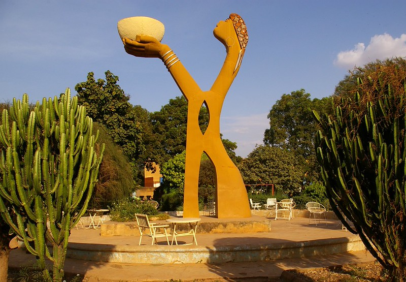

➤DESCRIPTION DE LA PLACE NAABA KOOM
La Place Naaba Koom est un grand carrefour public et un pôle de transport névralgique situé face à la gare ferroviaire, en plein centre de Ouagadougou. Cet espace urbain très animé est dominé par un monument majestueux représentant une femme en tenue traditionnelle qui incline une calebasse vers l'avant. Ce geste hautement symbolique matérialise l'eau de bienvenue offerte aux voyageurs, faisant de cette statue géante le symbole absolu de l'hospitalité et de la fraternité burkinabè pour tous ceux qui entrent dans la capitale.
➤HISTORIQUE DE LA PLACE NAABA KOOM
La place rend hommage à Naaba Koom II, le 33e roi du royaume Mossi de Ouagadougou, qui a régné de 1905 à 1942 et a marqué l'histoire par sa diplomatie durant la période coloniale. Son aménagement s'est consolidé avec l'ouverture de la ligne de chemin de fer Abidjan-Niger et l'inauguration de la gare de Ouagadougou en 1954, transformant ce lieu en véritable porte d'entrée de la ville. Au fil des décennies et des réaménagements urbains, les autorités ont pérennisé ce site pour en faire un monument mémoriel majeur, liant l'histoire royale mossi à l'identité moderne du Burkina Faso.
- Emplacement: situé face à la gare sitarail
- Horaires: Tous les jours 24h/24
- Accès: libre et gratuit